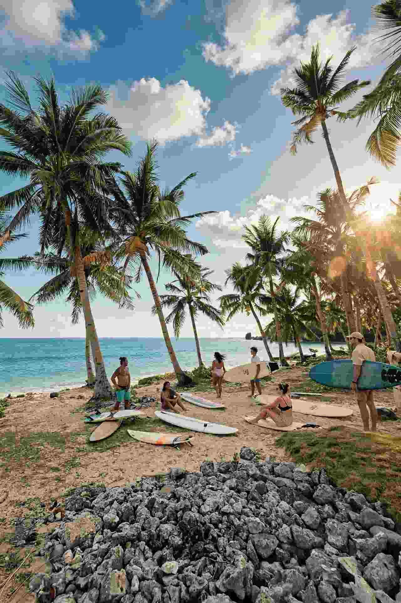

Siargao looks close on a map, but the way you reach it from Cebu decides how much of your trip is actually spent on the island. A flight lands you there in about an hour. The sea route turns the same journey into an overnight boat, a morning in Surigao City, a second crossing and a road transfer, all of which have to line up.
For most people the answer is simple: fly, and keep the ferry for the specific cases where it earns its place. This guide lays out both routes with the numbers that matter, then helps you choose a base once you are there, since the island's resort areas are spread out and the wrong one adds a motorbike ride to every meal.
Prices and schedules on Philippine domestic routes shift often, so the figures below are indicative ranges rather than quotes. Check the airline or shipping line before you pay.

Flying From Cebu to Siargao
Direct flights run from Mactan-Cebu to Sayak Airport (IAO), which serves Siargao from Del Carmen on the island's northwest side. Cebgo, Philippine Airlines and Sunlight Air have all been listed on the route, and the flight time is roughly 55 minutes to just over an hour. The aircraft are turboprops, which is worth knowing if you are prone to a bumpy ride and useful for baggage planning, because cabin space is tighter than on a jet.
One-way fares are commonly quoted somewhere between about PHP 2,500 and PHP 5,000, with promo seats occasionally lower and peak dates higher. Fares on this route have been moving around, so look at several dates before settling. If you are bringing a surfboard, ask the airline about its sports-equipment rules and fee before you buy, because that charge can change which carrier is cheaper overall.
The airport is not in General Luna. Expect about 30 km and 45 minutes to an hour on the road. Shared vans commonly run PHP 300 to PHP 400 per person, a private van PHP 2,000 to PHP 2,700 for the whole vehicle, and a habal-habal about PHP 350 per rider. Vans tend to wait until they fill, so a message to your accommodation the day before, with your flight number, saves time on arrival. A terminal expansion has been under way at the airport, so the arrivals area may look different from older photos.
When the flight makes the most sense
Fly whenever you have four days or fewer. Leave Cebu early and you can be on the island before lunch. On the way back, a late-afternoon flight gives you a last morning in the water, but leave a buffer for the road because the airport is close to an hour from the main resort strip.
The Ferry Route: Cebu, Surigao, Dapa
There is no boat that goes from Cebu straight to Siargao. The sea route has two separate legs, and the second leg is what makes the whole thing fragile.
Leg one: Cebu City to Surigao City
Overnight ferries from Cebu to Surigao City are run by Cokaliong and Starlite, and a daytime sailing by OceanJet has also been listed. The overnight crossing takes around eight and a half to ten hours. Economy fares are reported at roughly PHP 825 to PHP 1,350, while a bunk in a tourist class or cabin costs more. Sailing days are not always every night, and some listings show Cokaliong's Cebu departures only on certain weekdays, so confirm the exact day before you plan anything else around it.
Leg two: Surigao City to Dapa
Boats from Surigao to Dapa, the port town on Siargao's southwest corner, start as early as 4:30 in the morning and the last departure is around 3:30 in the afternoon. The slower RORO-style sailings take roughly three and a half to four hours, while fast craft cover it in about an hour and a half to two. Fares reported for this crossing range from about PHP 350 to PHP 680, depending on the vessel and class. Carry cash for it.
This is where the timing risk sits. An overnight boat that arrives in the early morning gives you a decent chance of catching a morning crossing. A late arrival, a sea delay or a cancelled fast craft can push you into a long wait, and because the last sailing leaves mid-afternoon, a missed connection can cost you the entire next day. From Dapa, General Luna is a further road ride that your accommodation can usually arrange.
Who the ferry actually suits
It suits travelers who have plenty of days, travelers who want to save on the fare, and anyone bringing a motorbike. It does not suit a long weekend. Add the two fares, the night on the boat and the waiting around in Surigao, and the savings are modest compared with a promo flight once you count the lost days. If you do take it, book a cabin bunk for the overnight leg, bring your own water and food, and keep one buffer day on the way home before any onward flight.
Flight or Ferry: The Quick Comparison
Think of it in terms of what you are short on. If you are short on time, fly. If you are short on cash but long on days, the ferry becomes sensible. If you are bringing a motorbike or a lot of gear, price both routes with the extra baggage included, because that is the one situation where the ferry can pull ahead on convenience as well as cost. For anyone connecting from Dumaguete, our guide to Dumaguete to Cebu by sea or road shows how to reach Cebu first before you book either leg.
Where to Stay in Siargao
Siargao is a long island, and the resorts string out along its southeast coast. Pick the area that matches your day, because getting between them costs time.
General Luna: the easy first base
General Luna is where most first-time visitors stay. It has the largest concentration of restaurants, cafes, tour desks, motorbike rentals and nightlife, and it is a short ride from the Cloud 9 break. It is the practical choice if you want options, are traveling alone, or do not plan to rent your own transport. The trade-off is that it is the busiest part of the island and can be noisy at night.
Cloud 9 and Tourism Road: for surfers
The stretch around the Cloud 9 boardwalk puts you closest to the best-known break, with board rentals and surf schools close by. It is quieter at night than central General Luna, but dinner usually means a short tricycle or motorbike ride into town unless your resort has its own restaurant.
Pacifico and the north: space and quiet
North of General Luna, toward Pacifico, the beaches are emptier and the resorts are more spread out. This suits travelers who want room and are happy to rent a motorbike, since food and shops are sparser. It is a poor fit if you hate driving or arrive late at night.
Dapa and Del Carmen: for transfers only
Dapa is the ferry port and Del Carmen is the airport town. Both have simple places to sleep, which helps if you have an early flight or an awkward ferry connection, but neither is where you want to spend your beach days.
Timing Your Visit
Cloud 9's surf season is generally described as running from around September to November, and the area gets crowded when the World Surf League event comes through. A 2026 travel guide places this year's Cloud 9 championship event at 31 October to 10 November, so if you are reading this in October, expect General Luna to be tight on rooms and higher on prices around those dates. Book early, or choose the days just before or after.
If you are not surfing, the calmer months and low-crowd weeks give you easier island hopping and better room choice. Whatever the season, sea conditions can change plans, so avoid stacking a tight flight home on the same day as a boat trip.
What to Do Besides Surf
Siargao has more to offer than its reef breaks. A half-day boat trip usually covers Naked Island, Daku Island and Guyam Island. Magpupungko Rock Pools in Pilar fill and drain with the tide, so go close to low tide when the pools are usable and check the tide table before heading out. Sohoton Cove in Bucas Grande is a full-day excursion that is easier through an organised tour than on your own. Boat trips are the thing to book ahead in busy weeks.
Practical Tips Before You Fly
Bring cash
Many small guesthouses, tricycle drivers and tour operators prefer cash, and ATMs on the island can run low on busy weekends. Withdraw in Cebu City before you fly, in small bills, and treat e-wallets as a bonus rather than a plan.
Rent a motorbike only if you are comfortable on one
Roads are paved in most places but narrow, with sandy patches and animals crossing. Wear a helmet that actually fits and avoid riding at night if you are not used to it. If you would rather not ride, tricycles and habal-habal rides are common for short trips.
Pack for rain and reef
A dry bag protects phones and cameras on boat days, and reef shoes help on rocky entries and tide pools. Sudden showers can flood low parts of the road for a short time.
So Which Route Should You Pick?
For a trip of up to four days, fly and book your first nights in General Luna or along Tourism Road. For a longer stay on a tight budget, the overnight ferry through Surigao works if you treat it as part of the adventure and keep your schedule loose. If Siargao feels like too much travel for the days you have, a shorter island trip such as a Camiguin weekend from Cebu or Bohol or the flight-and-jetty route to Boracay may fit your calendar better.